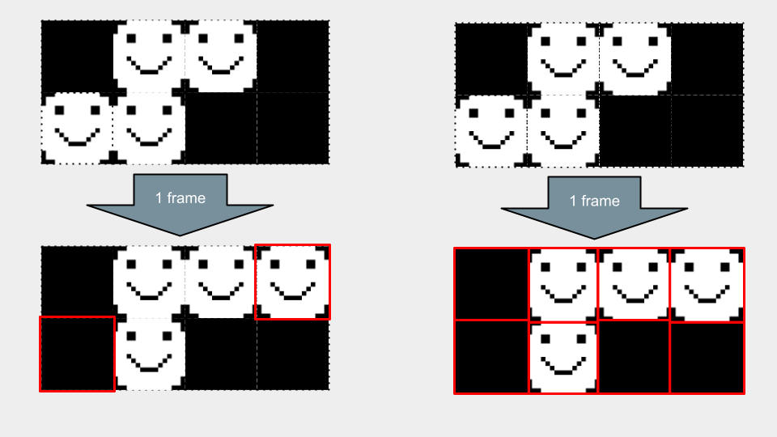

TI Snake
May 2024
Overview
A playable version of Snake that can be played on a TI-84+ CE scientific calculator.
This is a progress video I took, while figuring out how to render the snake image piece by piece.

Optimized snake rendering.
May 2024
A playable version of Snake that can be played on a TI-84+ CE scientific calculator.
This is a progress video I took, while figuring out how to render the snake image piece by piece.

Optimized snake rendering.